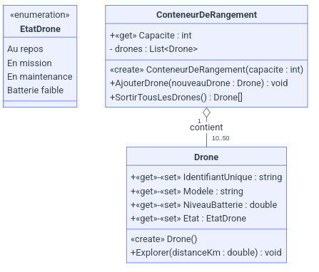

Département d'Informatique • Cégep de Victoriaville • Session Hiver 2026
Ce volet évalue votre maîtrise des outils de collaboration et de configuration d'environnement.
.gitignore Visual Studio fourni.Toto (la règle doit fonctionner pour Toto ou toto)..mp3.| Critère | Expertise | Maîtrise | Développement | Non-acquis | Pts |
|---|---|---|---|---|---|
| Git & Dépôt | Clonage et règles d'exclusion parfaits selon les consignes. | Clonage réussi, mais règles incomplètes ou erronées. | Règle absente ou fichier .gitignore non-conforme. | Remise .zip sur Teams (0 pour cette section). | / 5 |
Créez une solution Visual Studio nommée h26-p2-ex1-VotreDA organisée comme suit :
| Critère | Expertise | Maîtrise | Développement | Non-acquis | Pts |
|---|---|---|---|---|---|
| Solution | Solution propre, les 3 projets sont bien nommés et typés. | Solution créée mais certains noms ou types sont incorrects. | Structure incomplète, un ou plusieurs projets sont manquants. | Aucune solution ou tout est dans le projet Console. | / 5 |
Importez le projet source fourni sur Teams dans votre solution. Configurez les références de projet nécessaires pour manipuler le tableau suivant dans votre Main() :
int[] donnée = { 3, 5, 4, 85, 99, 41, 77, 4, 65, 8, 21, 6, 4, 56, 78, 2 };
| Critère | Expertise | Maîtrise | Développement | Non-acquis | Pts |
|---|---|---|---|---|---|
| Intégration | Importation réussie et exécution confirmée depuis le Main(). | Importation présente, mais l'exécution est en échec. | Code importé mais inaccessible ou non intégré. | Aucune intégration de code externe effectuée. | / 10 |
Vous venez d'être engagé par AéroTech Solutions, une entreprise spécialisée dans l'exploration automatisée par drones. Votre première mission est de concevoir le socle technique de leur nouvelle plateforme de gestion de flotte. Le succès de cette mission dépend de votre rigueur, de votre capacité à organiser votre code et de votre respect des standards de développement de l'entreprise.
C'est le diagramme nécessaire pour faire les 2 prochaines questions.

Dans votre projet de bibliothèque de classes, vous devez implémenter la structure de base représentant un drone. L'entreprise insiste sur la qualité professionnelle du code.
Nom de la classe : Drone
"DRN-042")."SkyWatcher X5").85.5).EtatDrone.EtatDrone :L'état du drone ne peut être qu'une des valeurs suivantes :
ExplorerOn simule une mission d'exploration :
void Explorer(double distanceKm). Le drone parcourt cette distance et revient.| Critère Drone | Expertise | Maîtrise | Développement | Non-acquis | Pts |
|---|---|---|---|---|---|
| Structure | L'ordre des membres suit parfaitement les standards (champs, constructeurs, propriétés, méthodes). | L'ordre des membres est généralement respecté malgré quelques inversions mineures. | L'organisation de la classe est confuse et ne respecte pas les conventions. | Aucune structure logique apparente dans la déclaration des membres. | / 4 |
| Visibilité | Les modificateurs d'accès (public/private) sont appliqués sans aucune erreur. | La visibilité est globalement bonne, avec une ou deux erreurs mineures. | Les choix de visibilité sont incohérents par rapport aux principes d'encapsulation. | Absence totale de contrôle d'accès (tout est laissé public par défaut). | / 4 |
| Nommage | Le nommage des membres est parfait et respecte rigoureusement les conventions C#. | Le nommage est globalement correct avec jusqu'à 3 oublis ou erreurs mineures. | Le nommage présente plus de 3 oublis ou erreurs par rapport aux conventions. | Nommage incohérent ou non-respect total des conventions de nommage. | / 4 |
| Énumération | L'énumération EtatDrone est créée correctement avec toutes les valeurs demandées. | L'énumération est présente mais il manque une valeur ou le nom est incorrect. | Type énuméré mal défini ou valeurs incohérentes avec l'énoncé. | Aucune énumération créée (usage de chaînes de caractères ou d'entiers). | / 4 |
| Encapsulation | Toutes les propriétés utilisent des setters validant rigoureusement les données entrantes. | L'encapsulation est présente mais certaines validations sont manquantes ou incomplètes. | Manque flagrant de validation dans les propriétés, permettant des états invalides. | Usage direct de champs publics au lieu de propriétés encapsulées. | / 5 |
| Exceptions | Les cas d'erreurs sont gérés par des levées d'exceptions C# précises et appropriées. | Des exceptions sont levées mais elles sont parfois trop génériques (ex: Exception). | La gestion des erreurs est incomplète ou utilise des méthodes non standards. | Aucune exception n'est levée pour gérer les situations d'erreur. | / 5 |
| Emplacement | La classe est située dans le projet approprié selon l'architecture demandée. | La classe est dans un projet fonctionnel mais l'emplacement n'est pas optimal. | Le projet choisi est inadéquat par rapport à la nature de la classe. | La classe est mal située (ex: placée dans le projet de test ou console). | / 5 |
| Logique & État | La méthode Explorer() modifie l'état interne de l'objet de manière logique et précise. | La méthode modifie l'état mais les calculs ou les transitions sont imprécis. | La méthode s'exécute mais ne parvient pas à modifier l'état interne de l'objet. | La logique métier est inexistante ou totalement erronée. | / 4 |
Pour sécuriser et organiser le transport des drones.
List<Drone> ou Drone[].AjouterDrone(Drone nouveauDrone) : Validation de la capacité maximale requise.SortirTousLesDrones() : Retourne un tableau (Drone[]) et vide le conteneur.| Critère Conteneur | Expertise | Maîtrise | Développement | Non-acquis | Pts |
|---|---|---|---|---|---|
| Structure | L'organisation interne respecte scrupuleusement les membres standards. | L'ordre des membres est généralement correct avec des écarts mineurs. | L'organisation des membres est désordonnée et peu professionnelle. | Aucune structure ou organisation logique apparente. | / 2 |
| Visibilité | Utilisation parfaite des modificateurs d'accès pour protéger les membres. | La visibilité est bonne mais présente quelques erreurs de protection. | La visibilité choisie expose inutilement certains membres internes. | Tous les membres sont laissés publics sans discernement. | / 2 |
| Nommage | Le nommage des membres est parfait et respecte les conventions. | Le nommage est correct avec jusqu'à 3 oublis ou erreurs. | Le nommage présente plus de 3 oublis ou erreurs par rapport aux conventions. | Nommage incohérent ou non-respect total des conventions. | / 3 |
| Encapsulation | Confidentialité totale : aucun accesseur (getter) n'expose la structure interne. | Structure protégée, mais certains attributs sont exposés. | La structure de données interne est partiellement exposée. | Échec critique : Un accesseur public expose directement le stockage. | / 2 |
| Exceptions | La validation de la capacité au constructeur est rigoureuse. | Une validation est présente mais le choix de l'exception est inadéquat. | La validation de capacité est partielle ou lacunaire. | Aucune exception n'est levée pour valider la capacité au constructeur. | / 2 |
| Données retournée | La méthode SortirTousLesDrones() retourne un tableau (Drone[]). | Les données sont retournées mais le type de retour n'est pas optimal. | Le type de retour est erroné par rapport aux spécifications. | La méthode ne retourne aucune donnée ou est absente. | / 2 |
| État & Transition | Le conteneur est intégralement vidé après l'opération d'extraction des drones. | Le conteneur est vidé mais l'information est devenue incohérente en fonction de l'implémentation. | Tentative de vidange effectuée mais incomplète ou erronée. | Le conteneur n'est simplement pas vidé après l'opération. | / 2 |
| Section de l'examen | Pondération |
|---|---|
| Question 1 : Versionnage et Git | / 5 pts |
| Question 2 : Architecture de la solution | / 5 pts |
| Question 3 : Intégration de code externe et exécution | / 10 pts |
| Question 4 : Classe Drone (Standards et Logique métier) | / 35 pts |
| Question 5 : Classe Conteneur (Encapsulation et Logistique) | / 15 pts |
| TOTAL GÉNÉRAL | / 70 pts |